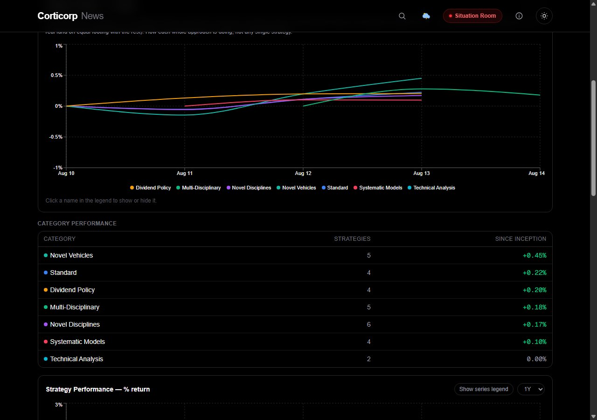

The bigger idea
Judging the roster at a glance, honestly
Two new views sit above the individual strategy comparisons on the Strategies tab. Category Indexes blends each category's member strategies into one composite line, so you can see how an entire discipline — Standard, Novel Vehicles, Dividend Policy, and the rest — is doing before drilling into any single strategy. And every strategy on the All Strategies table now carries a vs S&P 500 pill: the actual spread against a plain buy-and-hold benchmark, which is a clearer "is this actually working" signal than a raw return number on its own.

Category Indexes
One weighted line per category — Standard, Novel Disciplines, Novel Vehicles, Dividend Policy, Systematic Models, Multi-Disciplinary, Technical Analysis — plus a compact table of member count and since-inception return.

Every signal, cataloged
Every named, computed input a strategy has ever actually decided from, grouped by category — Market, News & Situation Room, Weather & Climate, Macro & Rates, and more. Built from real decision history, not a static list: a signal only shows up once it's been used, and a retired one (the old weather proxy is the live example) stays fully browsable, just tagged "not in use" instead of disappearing.
Simulated portfolios. Not investment advice.